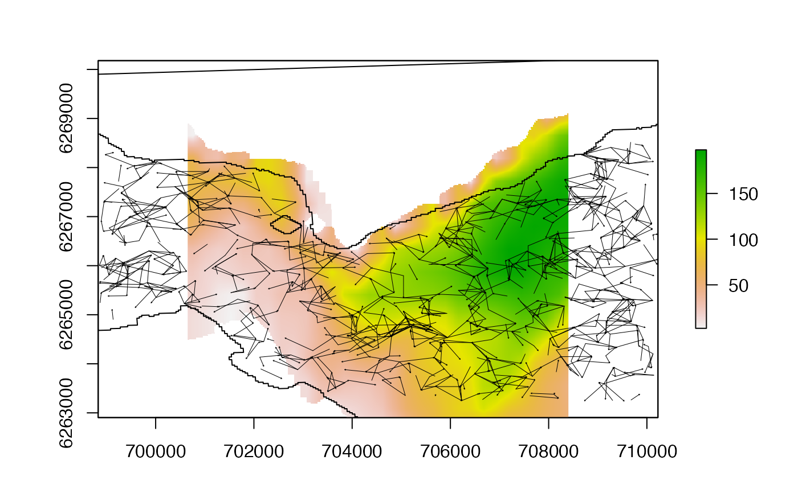
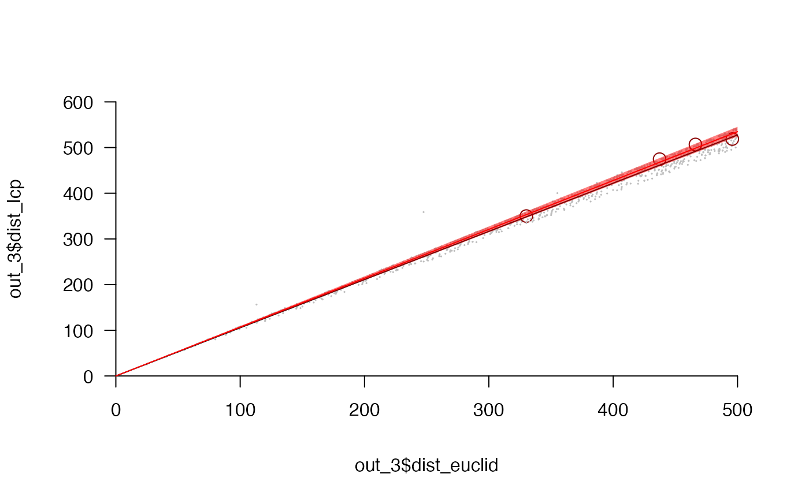

This function compares Euclidean distances to shortest distances for randomly sampled pairs of points across a raster.
lcp_comp( surface, barrier = NULL, distance = NULL, interval = raster::res(surface)[1], mobility = NULL, n = 10L, n_max = n, graph = NULL, ..., cl = NULL, varlist = NULL, verbose = TRUE )
Arguments
| surface | A |
|---|---|
| barrier | (optional) A simple features geometry that defines a barrier (see |
| distance | A numeric vector of distances. If supplied, for each distance, |
| interval | If |
| mobility | (optional) A number that defines the maximum distance between sampled locations. If supplied, |
| n | An integer that defines (a) the number of location pairs for each |
| n_max | If |
| graph | (optional) A graph object that defines cell nodes and edge costs for connected cells within the surface (see |
| ... | Additional arguments passed to |
| cl, varlist | (optional) Parallelisation options for distance-based location sampling (i.e., if |
| verbose | A logical input that defines whether or not to print messages to the console to monitor function progress. |
Value
The function returns a dataframe with sampled location pairs and the Euclidean and shortest distances between them. This contains the following columns:
index -- A number that defines the row.
id -- If
distanceis specified,idis number that defines the sample (from1:nfor eachdistance).cell_x0, cell_y0, cell_x1, cell_y1 -- Numbers that define the coordinates of sampled locations.
cell_id0, cell_id1 -- Integers that define the cell IDs for sampled locations.
dist_sim -- If
distanceis specified,dist_simis a number that defines the specified distance.dist_euclid -- A number that defines the Euclidean distance from
(cell_x0, cell_y0)to(cell_x1, cell_y1).dist_lcp -- A number that defines the shortest distance from
(cell_x0, cell_y0)to(cell_x1, cell_y1).barrier -- If applicable,
barrieris factor that defines whether ("1") or not ("0") the Euclidean line connecting(cell_x0, cell_y0)and(cell_x1, cell_y1)crosses thebarrier.
Details
This function was motivated by the need to determine the extent to which Euclidean distances are a suitable approximation of shortest distances in movement models for benthic animals.
To address this issue, this function samples multiple pairs of points on a raster (surface) and compares the Euclidean and shortest distances between sampled locations.
Two sampling methods are implemented. The first method (implemented if distance is supplied), samples n pairs of points for each distance that are approximately that distance apart. (Sampling across a grid is approximate because grid resolution is finite. The approximation is controlled by the interval parameter.) The advantage of this method is that the number of sampled location pairs for which Euclidean and shortest distances are compared is predetermined (by n), but the method can be slow if n is large. The second method (implemented if mobility is supplied), simply samples n locations and calculates the Euclidean distances between all combinations of sampled locations. Any location pairs that are more than mobility apart are then dropped and for the remaining location pairs (up to a maximum of n_max randomly sampled pairs) shortest distances are calculated. A potential advantage of this method is speed, but the number of location pairs below mobility for which Euclidean and shortest distances can be compared is not predetermined.
Regardless of sampling method, the expectation for the analysis is that at short Euclidean distances, Euclidean distances are likely to approximate shortest distances well (unless there is a barrier, such as the coastline, in the way). At longer Euclidean distances, shortest distances are likely to become much longer than Euclidean distances. For some movement frameworks, especially the particle filtering (pf) and processing (pf_simplify) routines in flapper, the Euclidean distance at which the shortest distances start to exceed the distance that an animal could move (over some time interval of interest) is an important parameter (termed calc_distance_limit in pf_simplify). For sampled locations that are a Euclidean distance less than this threshold apart, it is reasonable to assume that there exists a `valid' shortest path over the surface, given the animal's mobility, without having to calculate that path; for sampled locations that are a Euclidean distance more than this threshold apart, this assumption is not valid. For areas with a clear-cut threshold, for Euclidean-based sampling frameworks (see pf), it may be reasonable to reduce the animal's mobility to the threshold value to account for this difference; in other cases, it may be necessary to compute shortest distances for potentially problematic locations. Either way, an understanding of the extent to which Euclidean distances effectively approximate shortest distances at spatial scales relevant to an animal can help to minimise the number of shortest-distance calculations that are required within a movement modelling framework (which are much more computationally demanding than Euclidean-based calculations).
Author
Edward Lavender
Examples
#>#> #>#> #> #>#### Define surface for examples # We will focus on a relatively small area for speed # The raster resolution should be equal in x and y directions bathy <- flapper::dat_gebco boundaries <- raster::extent(700652.2, 708401.2, 6262905, 6270179) blank <- raster::raster(boundaries, res = c(5, 5)) bathy <- raster::resample(bathy, blank) bathy <- mask_io(bathy, flapper::dat_coast, mask_inside = TRUE)#> Warning: spgeom1 and spgeom2 have different proj4 strings# raster::plot(bathy) # raster::lines(dat_coast) #### Define barrier to movement coastline <- raster::crop(dat_coast, raster::extent(bathy)) coastline <- sf::st_as_sf(coastline) #### Define graph for shortest-distance calculations bathy_costs <- lcp_costs(bathy) # ~0.38 mins#> flapper::lcp_costs() called (@ 2022-05-28 18:11:52)... #> ... Defining transition matrices...#> Warning: transition function gives negative values#> ... Calculating distance matrices... #> ... Assembling LCP costs... #> ... flapper::lcp_costs() call completed (@ 2022-05-28 18:12:20) after ~0.46 minutes.#> flapper::lcp_graph_surface() called (@ 2022-05-28 18:12:20)... #> ... Defining nodes, edges and costs to make graph... #> ... Constructing graph object... #> ... flapper::lcp_graph_surface() call completed (@ 2022-05-28 18:12:36) after ~0.27 minutes.#### Example (1): Distance-vector-based implementation ## Implement function out_1 <- lcp_comp(surface = bathy, distance = c(50, 100), graph = bathy_graph, barrier = coastline)#> flapper::lcp_comp() called (@ 2022-05-28 18:12:36)... #> ... Defining parameters... #> ... Sampling n location pairs for each distance value... #> ... ... Sampling for distance = 50... #> ... ... ... Sampling starting locations... #> ... ... ... Sampling ending locations... #> ... ... Sampling for distance = 100... #> ... ... ... Sampling starting locations... #> ... ... ... Sampling ending locations... #> ... Processing samples... #> ... Determining barrier overlaps... #> ... Implementing shortest-distance calculations... #> ... ... Calculating shortest-distances via cppRouting::get_distance_pair() for 20 location pair(s) ...#>#> ... Cleaning results... #> ... flapper::lcp_comp() call completed (@ 2022-05-28 18:12:49) after ~0.22 minutes.#> 'data.frame': 20 obs. of 12 variables: #> $ index : int 1 2 3 4 5 6 7 8 9 10 ... #> $ id : int 1 2 3 4 5 6 7 8 9 10 ... #> $ cell_x0 : num 705640 708160 705715 708340 707570 ... #> $ cell_y0 : num 6265966 6268636 6266456 6268022 6265452 ... #> $ cell_x1 : num 705675 708130 705710 708375 707530 ... #> $ cell_y1 : num 6265926 6268682 6266406 6268056 6265426 ... #> $ cell_id0 : num 1306098 478902 1154213 669588 1466134 ... #> $ cell_id1 : num 1318505 464946 1169712 658745 1473876 ... #> $ dist_sim : num 50 50 50 50 50 50 50 50 50 50 ... #> $ dist_euclid: num 53.2 54.1 50.2 49.5 47.2 ... #> $ dist_lcp : num 54.5 58.3 52.1 49.5 50.4 ... #> $ barrier : Factor w/ 2 levels "0","1": 1 1 1 1 1 1 1 1 1 1 ...raster::lines(dat_coast)invisible(lapply(split(out_1, seq_len(nrow(out_1))), function(d){ arrows(x0 = d$cell_x0, y0 = d$cell_y0, x1 = d$cell_x1, y1 = d$cell_y1, length = 0.01, lwd = 2) }))## Compare simulated, Euclidean and shortest distances pp <- graphics::par(mfrow = c(1, 2)) pretty_plot(out_1$dist_sim, out_1$dist_euclid, xlab = "Distance (simulated) [m]", ylab = "Distance (Euclidean)[m]") graphics::abline(0, 1) pretty_plot(out_1$dist_euclid, out_1$dist_lcp, xlab = "Distance (Euclidean) [m]", ylab = "Distance (shortest) [m]")graphics::par(pp) #### Example (2): Distance-vector-based implementation in parallel out_2 <- lcp_comp(surface = bathy, distance = c(50, 100), graph = bathy_graph, barrier = coastline, cl = parallel::makeCluster(2L) )#> flapper::lcp_comp() called (@ 2022-05-28 18:12:49)... #> ... Defining parameters... #> ... Sampling n location pairs for each distance value... #> ... Processing samples... #> ... Determining barrier overlaps... #> ... Implementing shortest-distance calculations... #> ... ... Calculating shortest-distances via cppRouting::get_distance_pair() for 20 location pair(s) ...#>#> ... Cleaning results... #> ... flapper::lcp_comp() call completed (@ 2022-05-28 18:13:09) after ~0.33 minutes.#### Example (3): Mobility-based implementation ## Implement function for mobility = 500 mob <- 500 out_3 <- lcp_comp(surface = bathy, mobility = mob, n = 1000, graph = bathy_graph, barrier = coastline )#> flapper::lcp_comp() called (@ 2022-05-28 18:13:09)... #> ... Defining parameters... #> ... Sampling n locations... #> ... Calculating Euclidean distances between sampled locations... #> ... Filtering by mobility... #> ... Processing samples... #> ... Determining barrier overlaps... #> ... Implementing shortest-distance calculations... #> ... ... Calculating shortest-distances via cppRouting::get_distance_pair() for 1000 location pair(s) ...#>#> ... Cleaning results... #> ... flapper::lcp_comp() call completed (@ 2022-05-28 18:13:15) after ~0.09 minutes.raster::lines(dat_coast)invisible(lapply(split(out_3, seq_len(nrow(out_3))), function(d){ arrows(x0 = d$cell_x0, y0 = d$cell_y0, x1 = d$cell_x1, y1 = d$cell_y1, length = 0.01, lwd = 0.5) }))## Compare Euclidean and shortest distances # Extract the data for the paths that do not versus do cross a barrier out_3_barrier0 <- out_3[out_3$barrier == 0, ] out_3_barrier1 <- out_3[out_3$barrier == 1, ] # Set up plotting window pp <- graphics::par(mfrow = c(1, 2), oma = c(3, 3, 3, 3), mar = c(4, 4, 4, 4)) # Results for paths that do not cross a barrier # ... Visualisation pretty_plot(out_3_barrier0$dist_euclid, out_3_barrier0$dist_lcp, xlab = "Distance (Euclidean) [m]", ylab = "Distance (shortest) [m]", pch = ".") graphics::abline(0, 1, col = "red") graphics::abline(h = mob, col = "royalblue", lty = 3) # ... Euclidean distance parameter at which mobility is exceeded limit0 <- min(out_3_barrier0$dist_euclid[out_3_barrier0$dist_lcp > mob]); limit0#> [1] 451.276graphics::abline(v = limit0, col = "royalblue", lty = 3) # Results for paths that cross a barrier # ... Visualisation pretty_plot(out_3_barrier1$dist_euclid, out_3_barrier1$dist_lcp, xlab = "Distance (Euclidean) [m]", ylab = "Distance (shortest) [m]", pch = ".")# ... Euclidean distance parameter at which mobility is exceeded limit1 <- min(out_3_barrier1$dist_euclid[out_3_barrier1$dist_lcp > mob]); limit1#> [1] 404.0111graphics::par(pp) ## Plot the difference between Euclidean and shortest distances with distance pp <- graphics::par(mfrow = c(1, 2), oma = c(3, 3, 3, 3), mar = c(4, 4, 4, 4)) pretty_plot(out_3_barrier0$dist_euclid, out_3_barrier0$dist_lcp - out_3_barrier0$dist_euclid, xlab = "Distance (Euclidean) [m]", ylab = "Distance (shortest - Euclidean) [m]", pch = ".") pretty_plot(out_3_barrier1$dist_euclid, out_3_barrier1$dist_lcp - out_3_barrier1$dist_euclid, xlab = "Distance (Euclidean) [m]", ylab = "Distance (shortest - Euclidean) [m]", pch = ".")graphics::par(pp) ## Approximate shortest distances using a model based on Euclidean distances # Fit model mod <- lm(dist_lcp ~ 0 + dist_euclid:barrier, data = out_3) # Examine model predictions x <- seq(0, 500) nd <- data.frame(barrier = factor(0, levels = c(0, 1)), dist_euclid = x) ci <- list_CIs(predict(mod, nd, se.fit = TRUE)) pretty_plot(out_3$dist_euclid, out_3$dist_lcp, col = c("grey", "darkred")[out_3$barrier], cex = c(0.1, 1.5)[out_3$barrier])nd$barrier <- factor(1, levels = c(0, 1)) ci <- list_CIs(predict(mod, nd, se.fit = TRUE)) add_error_envelope(x, ci, add_fit = list(col = "red"), add_ci = list(col = scales::alpha("red", 0.5), border = FALSE))